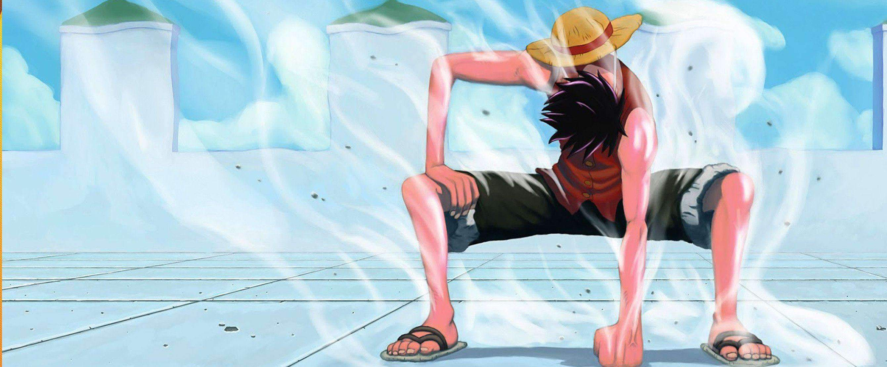
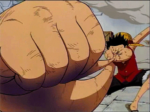
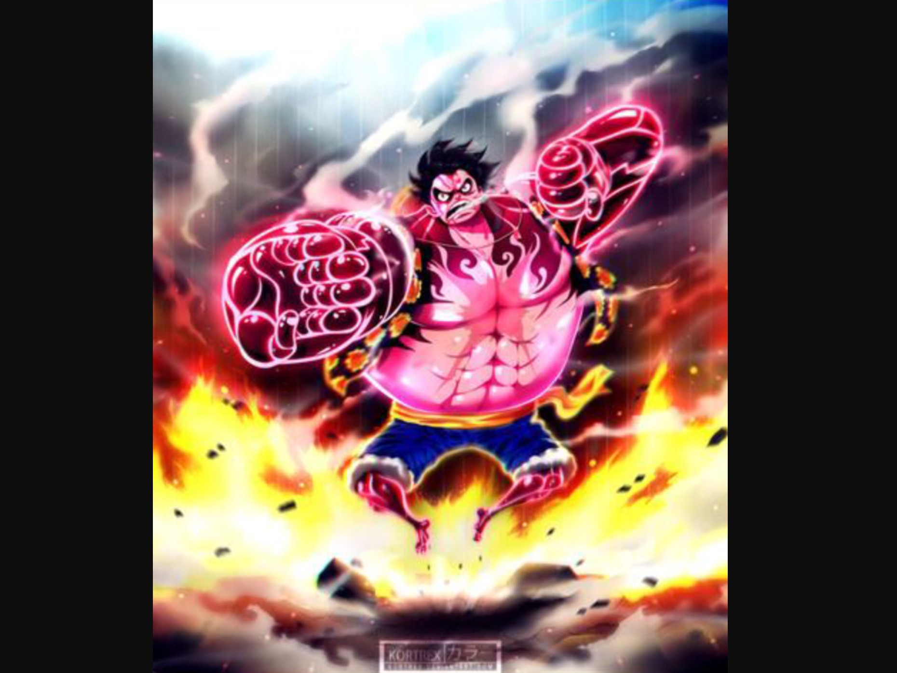
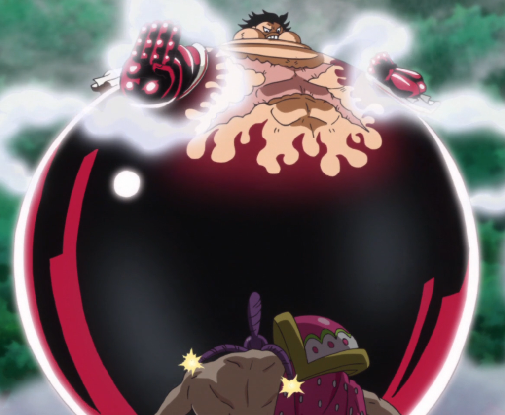
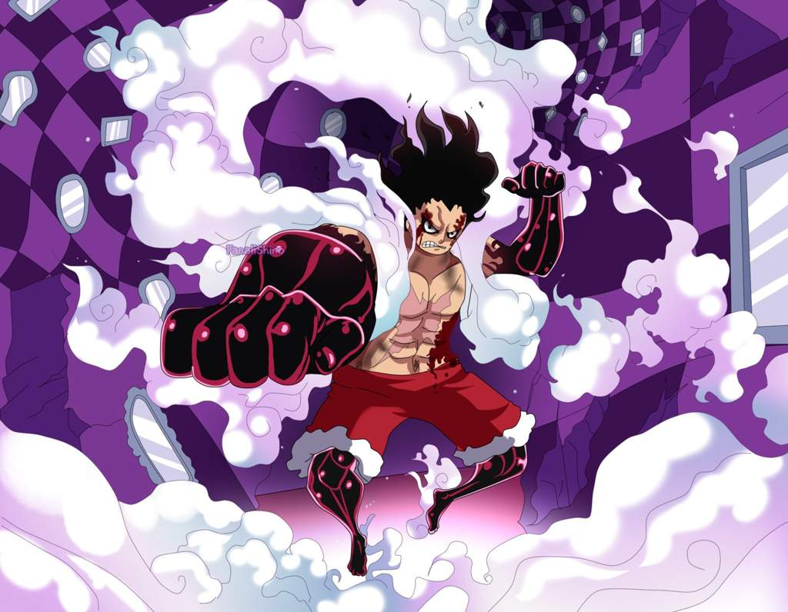

Monkey D. Luffy surnommé d'une manière récurrente Luffy au chapeau de paille est un personnage de fiction et principal protagoniste de la franchise japonaise One Piece créée par Eiichirō Oda.
Il est intronisé en tant que garçon possédant une puissance élastique, une faculté qu'il a développée après avoir mangé un fruit du démon.
Il est le fondateur et le capitaine de l'Équipage de Chapeau de paille. Son rêve de toujours est de devenir le roi des pirates en trouvant le trésor légendaire,
le One Piece, laissé par le défunt roi des pirates, Gol D. Roger.
Selon lui, le roi des pirates est l'homme le plus libre du monde.
Après ses actions sur Totto Land et contre l'Empereur Big Mom, il est actuellement considéré par la presse mondiale comme le 5e Empereur.
Gears
Après sa lourde défaite contre l'amiral Aokiji, Luffy met au point le Gear, une nouvelle technique qui lui permet d'accroître sa vitesse et sa force de façon spectaculaire. Il utilise cette technique à partir des événements d'Enies Lobby (contre Blueno et Rob Lucci du CP9). Le nom Gear est un jeu de mot anglais : le verbe to gear signifie en effet « changer de vitesse ».
Il existe trois niveaux de Gear : le Gear Second, le Gear Third et le Gear Fourth.
Gear Second
Découverte par accident lors d'un combat (dans le 7e film), il l'utilise pour la première fois contre Blueno, un membre du CP9, le Gear Second consiste à augmenter sa pression sanguine en utilisant ses jambes comme des pompes afin d'accélérer l'apport en nutriments et en oxygène de ses muscles. Luffy devient donc plus fort et beaucoup plus rapide, sa peau rougit et de la vapeur se dégage de son corps à cause de la pression sanguine (aucun humain ne pourrait faire ça, mais c'est un homme élastique). Mais cette technique n'est pas sans contrepartie : elle n'est utilisable qu'un temps limité, ses réserves d'énergie étant très vite épuisées. Il est alors obligé de se reposer un certain temps (ou de manger de la viande), à noter que cette technique est plus rapide à exécuter après les deux ans d’entrainement ou il ne lui suffit plus qu'un bras et d'une seconde pour l'activer contrairement aux premières utilisations. Sous cette forme, il utilise ses attaques standard auxquelles il ajoute le mot Jet en référence à la grande vitesse d'exécution de ces techniques. Après les deux ans d'entrainement, Luffy arrive à activer le Gear Second sur certaines parties de son corps.

Gear Third
Luffy l'utilise la première fois pour détruire une porte blindée à Enies Lobby, mais cette technique a été pleinement dévoilée lors du combat contre Lucci. Cette technique consiste à gonfler ses os (leur offrant une plus grande dureté) afin d'avoir des attributs de géant. Elle est réalisée en deux phases : il se mord le pouce et insuffle de l'air à l'intérieur des os de son bras. Il canalise cet air afin que les membres souhaités deviennent géants. Cette technique apporte une grande puissance de frappe mais nécessite un temps de préparation et occasionne une perte de mobilité. De plus, cette technique à un autre inconvénient, après utilisation Luffy souffre d'un rétrécissement dû l'expulsion presque totale de l'air présent dans son organisme qui se dissipe au bout d'un certains temps. Un inconvénient qui disparaîtra après ces 2 ans d'entraînement, témoignant de la progression de Luffy dans la maîtrise de son pouvoir.

Gear Fourth
Cette technique est mentionnée pour la première fois pendant le combat entre Luffy et Don Quijote Doflamingo. C'est une forme ressemblant au Gear Third, sauf que Luffy pompe de l'air dans ses muscles, plutôt que dans ses os, pour augmenter sa masse musculaire; tout en l'associant avec le fluide offensif et l'élasticité donnée par son fruit du démon. Il ressemble étrangement à Nightmare Luffy, la forme qu'il avait prise en absorbant 100 ombres sur Thriller Bark. Il arrive à contracter ses membres en Gear Fourth conservant toute son élasticité, ce même avec le fluide offensif, ce qui lui procure une défense incroyable et, selon les dires de Doflamingo lui-même, la force d'attaque de Luffy a considérablement augmenté. Il semble aussi beaucoup plus léger. En effet, il se déplace et reste sur place comme le ferait un ballon de baudruche, il rebondit constamment. Cette forme lui permet aussi de voler. En contrepartie, s'il ne parvient pas à décimer son ennemi avant la fin du Gear Fourth, il devient complètement amorphe. En effet, à la suite de ces attaques en Gear Fourth, il ne peut plus utiliser son fluide pendant 10 minutes et il n'a plus aucune force.

Lors du combat entre Charlotte Cracker et Luffy, ce dernier a utilisé le Tank Man. Après avoir combattu le fils de Big Mom pendant 11 heures et avoir mangé ses clones de biscuits, Luffy s'est transformé en une forme ressemblant à un tank.

Lors du combat entre Charlotte Dent-de-chien et Luffy, ce dernier a utilisé le Snake Man.
